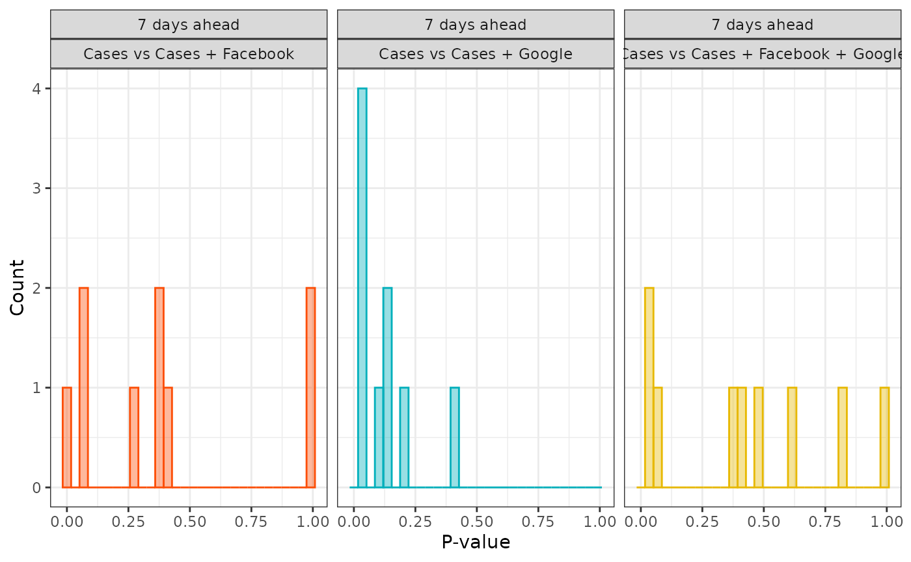
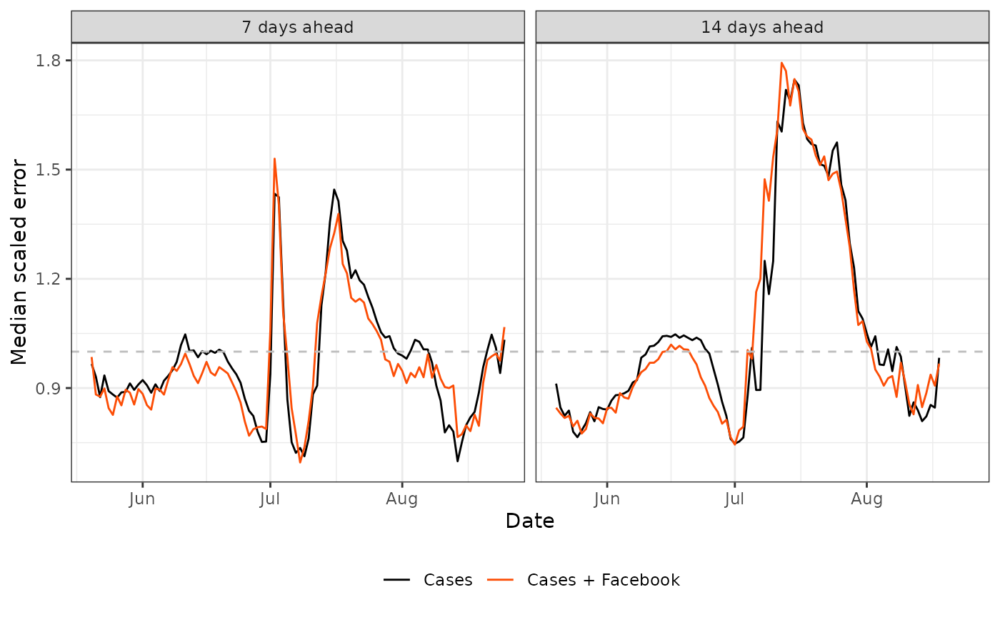
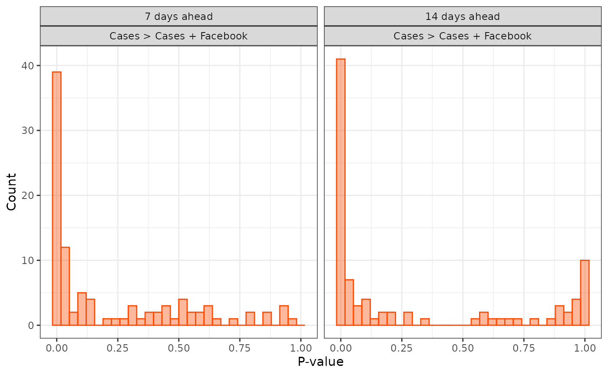
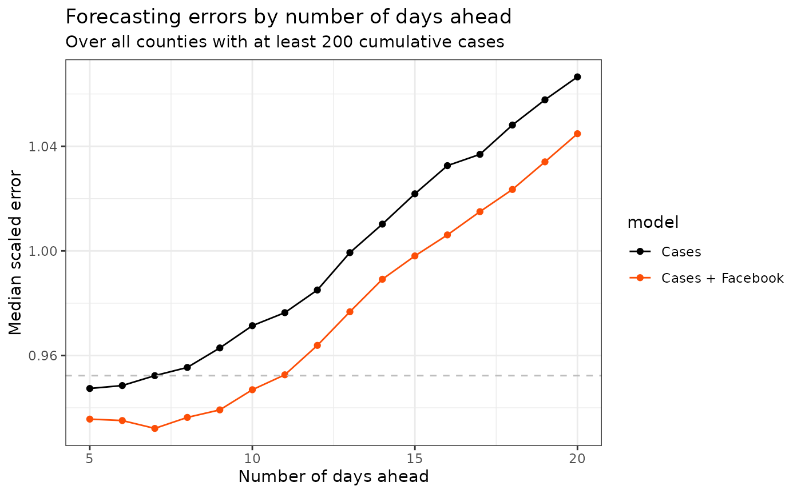

Can symptoms surveys improve COVID-19 forecasts?
Source:vignettes/articles/symptom-surveys.Rmd
symptom-surveys.RmdIntroduction
During the COVID-19 pandemic, Delphi ran COVID-19 symptom surveys through Facebook and Google. In these surveys, millions of people in the US were asked whether they or the people that they know are experiencing COVID-like symptoms. This enabled the calculation of a “% CLI-in-community” signal for counties across the US. This is simply an estimate of the percentage of people who know someone who is presently sick with a COVID-like illness.
These surveys were valuable tools for monitoring the pandemic because they reported daily and not subject to reporting delays that plague other sources of data.
In this vignette, we will look at whether the % CLI-in-community indicators from the Facebook and Google surveys improve the accuracy of short-term forecasts of county-level COVID-19 case rates. The purpose here is to study and demonstrate the value of the Facebook and Google % CLI-in-community signals to add predictive power beyond what we can achieve with simple time series models trained on case rates alone.
Note that this vignette was adapted from the following Delphi
blog post, with the necessary modifications to enable the use of
epipredict. The results may be different from those on the
blog post (one reason is that we are exploring the use of a different
forecaster and another is that we’re using the most recent versions of
the datasets).
Now, we will delve into the forecasting problem set-up and code followed by a discussion of the results.
Problem Setup
Our goal is to predict county-level COVID-19 case incidence rates for 1 and 2 weeks ahead. For this, we restrict our attention to the 442 counties that had at least 200 confirmed cases by May 14, 2020 (the end of the Google survey data) and in which both the Facebook and Google % CLI-in-community signals are available.
To set the notation, let denote the smoothed COVID-19 case incidence rate for location (county) and day . Let and denote the Facebook and Google % CLI-in-community signals, respectively, for location and time . Note that we rescale all these signals from their given values in our API so that they are true proportions. We then evaluate the following four models:
Here or depending on the target value, and is a transformation to be specified later.
We’ll call the first model the “Cases” model because it bases its predictions of future case rates on COVID-19 case rates (from 0, 1 and 2 weeks back). The second model is called “Cases + Facebook” because it additionally incorporates the current Facebook signal, and the Facebook signal from 1 and 2 weeks back. The third model, “Cases + Google”, is exactly the same as the second but substitutes the Google signal instead of the Facebook one. The fourth and final model model, “Cases + Facebook + Google”, uses both Facebook and Google signals. For each model, we use our canned autoregressive forecaster with quantile regression to forecast at time (and predict case rates at ). We train over training over all locations, (all 442 counties), and all time that are within the most recent 14 days of data available up to and including time . In other words, we use 14 trailing days for the training set.
The forecasts are denoted by . To see how accurate these forecasts are, we use the scaled absolute error:
where the error in the denominator is the strawman model error. This
model simply uses the most recent case rate for future predictions. You
may recognize this as an application of the flatline forecaster from
epipredict.
We normalize in this manner for two reasons. First, since the scaled error is the fraction improvement over the strawman’s error, we get an interpretable scale, where numebrs like 0.8 or 0.9 are favorable, and numbers like 2 or 5 are increasingly disastrous. Second, in such problems we should expect considerable county-to-county variability in the forecasting difficulty. Normalizing by the strawman’s error helps to adjust for this so that the results on aggregate are not dominated by the county-to-county differences.
Transformations
To help stabilize the variance of the case, Facebook and Google data, we chose to use the logit transformation on their proportions. In actuality, we use a “padded” version such that the numerator and denominator are pushed away from zero by a small constant, . An alternative to the logit transform is using a log transform (as in where is for padding). Note that such variance-stabilizing transformations are used in the model fitting. When we calculate the errors, we back-transform the values for comparison using the inverse transform so that we may calculate them on the original scale.
Forecasting Code
The code below marches the forecast date forward, one day at a time for the nine forecasting dates for which the four models can all be fit (May 6, 2020 to May 14, 2020). Then, it fits the models, makes predictions 7 and 14 days ahead (as permissible by the data), and records the errors.
There are a number of benefits to using epipredict over
writing the code from scratch to fit and predict under each of the
models. First, we do not have to reformat the data for input into a
model or concern ourselves with its unique interface. We instead work
under unifying interface to streamline the modelling process. Second, we
avoid having to write our own function to append shift values (leads or
lags). This is done for us under-the-hood in the
arx_forecaster() function. You can see this in the
forecaster output by inspecting the step_epi_lag() and
step_epi_ahead() pre-processing steps in the
epi_workflow. Third, we only need one for loop for the
forecast dates (and not a second loop for the different aheads) as we
can easily use map() with the arx_forecaster()
over the different ahead values, as we’ve done before.
However, there are some trade-offs to bear in mind. For instance,
since we are using a canned arx forecaster, we are not able to easily
modify and add steps such as that for signal transformations to the
pre-processing (this is pre-specified as part of using a canned
forecaster). If we were to code-up our own forecaster under the
epipredict framework, we could easily add steps to re-scale
and transform the signals to our epi_recipe. This would
make the code more succinct and self-contained.
library(epidatr)
library(dplyr)
library(purrr)
library(epipredict)
library(recipes)
case_num <- 200
as_of_date <- "2020-05-14"
geo_values <- pub_covidcast(
source = "jhu-csse",
signals = "confirmed_cumulative_num",
geo_type = "county",
time_type = "day",
geo_values = "*",
time_values = epirange(20200514, 20200514)
) %>%
filter(value >= case_num) %>%
pull(geo_value) %>%
unique()
# Fetch county-level Google and Facebook % CLI-in-community signals, and JHU
# confirmed case incidence proportion
start_day <- "2020-04-11"
end_day <- "2020-09-01"
goog_sm_cli <- pub_covidcast(
source = "google-survey",
signals = "smoothed_cli",
geo_type = "county",
time_type = "day",
geo_values = "*",
time_values = epirange(start_day, end_day)
) %>%
filter(geo_value %in% geo_values) %>%
select(geo_value, time_value, value) %>%
rename(goog = value)
fb_survey <- pub_covidcast(
source = "fb-survey",
signals = "smoothed_hh_cmnty_cli",
geo_type = "county",
time_type = "day",
geo_values = "*",
time_values = epirange(start_day, end_day)
) %>%
filter(geo_value %in% geo_values) %>%
select(geo_value, time_value, value) %>%
rename(fb = value)
jhu_7dav_incid <- pub_covidcast(
source = "jhu-csse",
signals = "confirmed_7dav_incidence_prop",
geo_type = "county",
time_type = "day",
geo_values = "*",
time_values = epirange(start_day, end_day)
) %>%
filter(geo_value %in% geo_values) %>%
select(geo_value, time_value, value) %>%
rename(case = value)
# Find "complete" counties, present in all three data signals at all times
geo_values_complete <- intersect(
intersect(goog_sm_cli$geo_value, fb_survey$geo_value),
jhu_7dav_incid$geo_value
)
# Make one big matrix by joining these three data frames
z <- full_join(full_join(goog_sm_cli, fb_survey, by = c("geo_value", "time_value")),
jhu_7dav_incid,
by = c("geo_value", "time_value")
) %>%
filter(geo_value %in% geo_values_complete) %>%
as_epi_df()
Logit <- function(x, a = 0.01) log((x + a) / (1 - x + a))
Sigmd <- function(y, a = 0.01) (exp(y) * (1 + a) - a) / (1 + exp(y))
#### Parameters #####
# Transforms to consider, in what follows
trans <- Logit
inv_trans <- Sigmd
# Rescale factors for our signals: bring them all down to proportions (between
# 0 and 1)
rescale_f <- 1e-2 # Originally a percentage
rescale_g <- 1e-2 # Originally a percentage
rescale_c <- 1e-5 # Originally a count per 100,000 people
z <- z %>% mutate(
case = trans(case * rescale_c),
fb = trans(fb * rescale_f),
goog = trans(goog * rescale_g)
)
# lead = 7
leads <- c(7, 14)
lags <- c(0, 7, 14)
n <- 14 # Number of trailing days to use for the training set
# Nine forecast dates
dates <- seq(as.Date("2020-05-06"), as.Date("2020-05-14"), by = "day")
# List for storage of results
out_list <- vector(mode = "list", length = length(dates))
for (k in 1:length(dates)) {
date <- dates[k]
if (date %in% c("2020-05-13", "2020-05-14")) leads <- c(7, 14) else leads <- 7
# Pre-structuring test data
z_te <- z %>%
rename(
target_date = time_value,
target_case = case
) %>%
select(geo_value, target_date, target_case)
# Strawman model
out_df0 <- map(leads, ~ flatline_forecaster(
z %>%
filter(between(time_value, date - .x - max(lags) - n, date)) %>%
select(time_value, geo_value, case),
outcome = "case",
args_list = arx_args_list(
lags = lags,
ahead = .x,
nonneg = FALSE
)
)$predictions %>%
mutate(lead = .x) %>%
left_join(z_te %>% filter(target_date == (date + .x)), by = c("geo_value", "target_date"))) %>%
list_rbind() %>%
mutate(err0 = abs(inv_trans(.pred) - inv_trans(target_case))) %>%
select(geo_value, forecast_date, err0, lead)
# Cases model
out_df1 <- map(leads, ~ arx_forecaster(
z %>%
filter(between(time_value, date - .x - max(lags) - n, date)) %>%
select(time_value, geo_value, case) %>%
filter(complete.cases(.)),
outcome = "case",
predictors = "case",
trainer = quantile_reg(),
args_list = arx_args_list(
lags = lags,
ahead = .x,
nonneg = FALSE
)
)$predictions %>%
mutate(lead = .x) %>%
left_join(z_te %>% filter(target_date == (date + .x)), by = c("geo_value", "target_date"))) %>%
list_rbind() %>%
mutate(err1 = abs(inv_trans(.pred) - inv_trans(target_case))) %>%
select(geo_value, forecast_date, err1, lead)
# Cases and Facebook model
out_df2 <- map(leads, ~ arx_forecaster(
z %>%
filter(between(time_value, date - .x - max(lags) - n, date)) %>%
select(time_value, geo_value, case, fb) %>%
filter(complete.cases(.)),
outcome = "case",
predictors = c("case", "fb"),
trainer = quantile_reg(),
args_list = arx_args_list(
lags = lags,
ahead = .x,
nonneg = FALSE
)
)$predictions %>%
mutate(lead = .x) %>%
left_join(z_te %>% filter(target_date == (date + .x)), by = c("geo_value", "target_date"))) %>%
list_rbind() %>%
mutate(err2 = abs(inv_trans(.pred) - inv_trans(target_case))) %>%
select(geo_value, forecast_date, err2, lead)
# Cases and Google model
out_df3 <- map(leads, ~ arx_forecaster(
z %>%
filter(between(time_value, date - .x - max(lags) - n, date)) %>%
select(time_value, geo_value, case, goog) %>%
filter(complete.cases(.)),
outcome = "case",
predictors = c("case", "goog"),
trainer = quantile_reg(),
args_list = arx_args_list(
lags = lags,
ahead = .x,
nonneg = FALSE
)
)$predictions %>%
mutate(lead = .x) %>%
left_join(z_te %>% filter(target_date == (date + .x)), by = c("geo_value", "target_date"))) %>%
list_rbind() %>%
mutate(err3 = abs(inv_trans(.pred) - inv_trans(target_case))) %>%
select(geo_value, forecast_date, err3, lead)
# Cases, Facebook and Google model
out_df4 <- map(leads, ~ arx_forecaster(
z %>%
filter(between(time_value, date - .x - max(lags) - n, date)) %>%
select(time_value, geo_value, case, fb, goog) %>%
filter(complete.cases(.)),
outcome = "case",
predictors = c("case", "goog"),
trainer = quantile_reg(),
args_list = arx_args_list(
lags = lags,
ahead = .x,
nonneg = FALSE
)
)$predictions %>%
mutate(lead = .x) %>%
left_join(z_te %>% filter(target_date == (date + .x)), by = c("geo_value", "target_date"))) %>%
list_rbind() %>%
mutate(err4 = abs(inv_trans(.pred) - inv_trans(target_case))) %>%
select(geo_value, forecast_date, err4, lead)
# Left join of the results for all models
out_list[[k]] <- left_join(left_join(left_join(left_join(out_df0, out_df1), out_df2), out_df3), out_df4)
}
# Outside of loop bind rows of list
out_df <- do.call(rbind, out_list)Results: All Four Models
Since there are only two common forecast dates available for the four models for the 14-day-ahead forecasts (May 13 and May 14, 2020), we skip studying the 14-day-ahead forecast results in this four-way model discussion.
Below we compute the median scaled errors for each of the four models over the 9-day test period. We can see that adding either or both of the survey signals improves on the median scaled error of the model that uses cases only, with the biggest gain achieved by the “Cases + Google” model. We can also see that the median scaled errors are all close to 1 (with all but that from the “Cases + Google” and “Cases + Facebook + Google” models exceeding 1), which speaks to the difficulty of the forecasting problem.
library(dplyr)
library(tidyr)
library(ggplot2)
model_names <- c(
"Cases", "Cases + Facebook", "Cases + Google",
"Cases + Facebook + Google"
)
# Calculate the scaled errors for each model, that is, the error relative to the strawman's error
res_all4 <- out_df %>%
drop_na() %>% # Restrict to common time
mutate(across(err1:err4, ~ .x / err0)) %>% # compute relative error to strawman
mutate(across(err2:err4, list(diff = ~ err1 - .x))) %>% # relative to cases model
ungroup() %>%
select(-err0)
# Calculate and print median errors, for all 4 models, and just 7 days ahead
res_err4 <- res_all4 %>%
select(-ends_with("diff")) %>%
pivot_longer(
names_to = "model", values_to = "err",
cols = -c(geo_value, forecast_date, lead)
) %>%
mutate(
lead = factor(lead, labels = paste(leads, "days ahead")),
model = factor(model, labels = model_names)
)
knitr::kable(
res_err4 %>%
group_by(model, lead) %>%
summarise(err = median(err), n = length(unique(forecast_date))) %>%
arrange(lead) %>% ungroup() %>%
rename(
"Model" = model, "Median scaled error" = err,
"Target" = lead, "Test days" = n
) %>%
filter(Target == "7 days ahead"),
caption = paste(
"Test period:", min(res_err4$forecast_date), "to",
max(res_err4$forecast_date)
),
format = "html", table.attr = "style='width:70%;'"
)| Model | Target | Median scaled error | Test days |
|---|---|---|---|
| Cases | 7 days ahead | 1.0126408 | 9 |
| Cases + Facebook | 7 days ahead | 1.0075064 | 9 |
| Cases + Google | 7 days ahead | 0.9664556 | 9 |
| Cases + Facebook + Google | 7 days ahead | 0.9970219 | 9 |
$$\\[0.01in]$$ Are these differences in median scaled errors significant? Some basic hypothesis testing suggests that some probably are: Below we conduct a sign test for whether the difference in the “Cases” model’s scaled error and each other model’s scaled error is centered at zero. The sign test is run on the 9 test days x 442 counties = 3978 pairs of scaled errors. The p-value from the “Cases” versus “Cases + Google” test is tiny and well below a cutoff of 0.01. In contrast, the p-values from the “Cases” versus “Cases + Facebook” and the “Cases” versus “Cases + Facebook + Google” tests are much bigger and exceed this cutoff, suggesting that the Facebook survey is not adding as much for this situation (meaning the time and ahead considered, etc.)
# Compute p-values using the sign test against a one-sided alternative, for
# all models, and just 7 days ahead
res_dif4 <- res_all4 %>%
select(-ends_with(as.character(1:4))) %>%
pivot_longer(
names_to = "model", values_to = "diff",
cols = -c(geo_value, forecast_date, lead)
) %>%
mutate(
lead = factor(lead, labels = paste(leads, "days ahead")),
model = factor(model,
labels = c(
"Cases vs Cases + Facebook",
"Cases vs Cases + Google",
"Cases vs Cases + Facebook + Google"
)
)
)
knitr::kable(
res_dif4 %>%
group_by(model, lead) %>%
summarise(p = binom.test(
x = sum(diff > 0, na.rm = TRUE),
n = n(), alt = "greater"
)$p.val) %>%
ungroup() %>% filter(lead == "7 days ahead") %>%
rename("Comparison" = model, "Target" = lead, "P-value" = p),
format = "html", table.attr = "style='width:50%;'",
digiits = 3
)| Comparison | Target | P-value |
|---|---|---|
| Cases vs Cases + Facebook | 7 days ahead | 0.3065796 |
| Cases vs Cases + Google | 7 days ahead | 0.0000225 |
| Cases vs Cases + Facebook + Google | 7 days ahead | 0.2291932 |
$$\\[0.01in]$$ We should take these test results with a grain of salt because the sign test assumes independence of observations, which clearly cannot be true given the spatiotemporal structure of our forecasting problem. To mitigate the dependence across time (which intuitively seems to matter more than that across space), we recomputed these tests in a stratified way, where for each day we run a sign test on the scaled errors between two models over all 442 counties. The results are plotted as histograms below; the “Cases + Google” and (to a lesser extent) the “Cases + Facebook + Google” models appear to deliver some decently small p-values, but this is not very evident with the “Cases + Facebook” model. Taking a larger sample size (of more than nine test days) would be a natural next step to take to see if these results persist.
# Red, blue (similar to ggplot defaults), then yellow
ggplot_colors <- c("#FC4E07", "#00AFBB", "#E7B800")
ggplot(res_dif4 %>%
group_by(model, lead, forecast_date) %>%
summarise(p = binom.test(
x = sum(diff > 0, na.rm = TRUE),
n = n(), alt = "greater"
)$p.val) %>%
ungroup() %>% filter(lead == "7 days ahead"), aes(p)) +
geom_histogram(aes(color = model, fill = model), alpha = 0.4) +
scale_color_manual(values = ggplot_colors) +
scale_fill_manual(values = ggplot_colors) +
facet_wrap(vars(lead, model)) +
labs(x = "P-value", y = "Count") +
theme_bw() +
theme(legend.position = "none")
Results: First Two Models
One way to get a larger sample size with the current data is to compare a subset of the models. Therefore, next we focus on comparing results between the “Cases” and “Cases + Facebook” models only. Restricting to common forecast dates for these two models yields a much longer test period for the 7 and 14-day-ahead forecasts: May 20 through August 27, 2020. We make the code to compare these two models a simple function so that we have the option to use it over different dates or aheads (in particular, this function will be useful for the next section where we explore several ahead values):
case_fb_mods <- function(forecast_dates, leads) {
# List for storage of results
out_list <- vector(mode = "list", length = length(forecast_dates))
for (k in 1:length(forecast_dates)) {
date <- forecast_dates[k]
# Pre-structuring test data
z_te <- z %>%
rename(
target_date = time_value,
target_case = case
) %>%
select(geo_value, target_date, target_case)
# Strawman model
out_df0 <- map(leads, ~ flatline_forecaster(
z %>%
filter(between(time_value, date - .x - max(lags) - n, date)) %>%
select(time_value, geo_value, case),
outcome = "case",
args_list = arx_args_list(
lags = lags,
ahead = .x,
nonneg = FALSE
)
)$predictions %>%
mutate(lead = .x) %>%
left_join(z_te %>% filter(target_date == (date + .x)), by = c("geo_value", "target_date"))) %>%
list_rbind() %>%
mutate(err0 = abs(inv_trans(.pred) - inv_trans(target_case))) %>%
select(geo_value, forecast_date, err0, lead)
# Cases model
out_df1 <- map(leads, ~ arx_forecaster(
z %>%
filter(between(time_value, date - .x - max(lags) - n, date)) %>%
select(time_value, geo_value, case) %>%
filter(complete.cases(.)),
outcome = "case",
predictors = "case",
trainer = quantile_reg(),
args_list = arx_args_list(
lags = lags,
ahead = .x,
nonneg = FALSE
)
)$predictions %>%
mutate(lead = .x) %>%
left_join(z_te %>% filter(target_date == (date + .x)), by = c("geo_value", "target_date"))) %>%
list_rbind() %>%
mutate(err1 = abs(inv_trans(.pred) - inv_trans(target_case))) %>%
select(geo_value, forecast_date, err1, lead)
# Cases and Facebook model
out_df2 <- map(leads, ~ arx_forecaster(
z %>%
filter(between(time_value, date - .x - max(lags) - n, date)) %>%
select(time_value, geo_value, case, fb) %>%
filter(complete.cases(.)),
outcome = "case",
predictors = c("case", "fb"),
trainer = quantile_reg(),
args_list = arx_args_list(
lags = lags,
ahead = .x,
nonneg = FALSE
)
)$predictions %>%
mutate(lead = .x) %>%
left_join(z_te %>% filter(target_date == (date + .x)), by = c("geo_value", "target_date"))) %>%
list_rbind() %>%
mutate(err2 = abs(inv_trans(.pred) - inv_trans(target_case))) %>%
select(geo_value, forecast_date, err2, lead)
# Left join of the results for all models
out_list[[k]] <- left_join(left_join(out_df0, out_df1), out_df2)
}
# Outside of loop bind rows and split into two lists by lead
out_df <- do.call(rbind, out_list)
}
# Choose forecast dates common to the Cases and Cases + Facebook models
dates <- seq(as.Date("2020-05-20"), as.Date("2020-08-27"), by = "day")
# Two leads to consider
leads <- c(7, 14)
res <- case_fb_mods(dates, leads)The median scaled errors over the test period are computed and reported below. Now we see a decent improvement in median scaled error for the “Cases + Facebook” model, which is true for both 7-day-ahead and 14-day-ahead forecasts.
# For just models 1 and 2, then calculate the scaled
# errors, that is, the error relative to the strawman's error
res_all2 <- res %>%
drop_na() %>% # Restrict to common time
mutate(across(err1:err2, ~ .x / err0)) %>% # compute relative error to strawman
mutate(err12_diff = err1 - err2) %>% # Compute differences
# relative to cases model
ungroup() %>%
select(-err0)
# Calculate and print median errors, for just models 1 and 2, and both 7 and 14
# days ahead
res_err2 <- res_all2 %>%
select(-ends_with("diff")) %>%
pivot_longer(
names_to = "model", values_to = "err",
cols = -c(geo_value, forecast_date, lead)
) %>%
mutate(
lead = factor(lead, labels = paste(leads, "days ahead")),
model = factor(model, labels = model_names[1:2])
)
knitr::kable(
res_err2 %>%
select(-ends_with("diff")) %>%
group_by(model, lead) %>%
summarise(err = median(err), n = length(unique(forecast_date))) %>%
arrange(lead) %>% ungroup() %>%
rename(
"Model" = model, "Median scaled error" = err,
"Target" = lead, "Test days" = n
),
caption = paste(
"Test period:", min(res_err2$forecast_date), "to",
max(res_err2$forecast_date)
),
format = "html", table.attr = "style='width:70%;'", digits = 3
)| Model | Target | Median scaled error | Test days |
|---|---|---|---|
| Cases | 7 days ahead | 0.952 | 98 |
| Cases + Facebook | 7 days ahead | 0.932 | 98 |
| Cases | 14 days ahead | 1.010 | 91 |
| Cases + Facebook | 14 days ahead | 0.989 | 91 |
$$\\[0.01in]$$
Thanks to the extended length of the test period, we can also plot the trajectories of the median scaled errors over time, as we do below, with the left plot concerning 7-day-ahead forecasts, and the right 14-day-ahead forecasts. These plots reveal something at once interesting and bothersome: the median scaled errors are quite volatile over time, and for some periods in July, forecasting became much harder, with the scaled errors reaching above 1.5 for 7-day-ahead forecasts, and above 1.8 for 14-day-ahead forecasts. Furthermore, we can see a clear visual difference between the median scaled errors from the “Cases + Facebook” model in red and the “Cases” model in black. The former appears to be below the latter during periods with low median scaled errors and above during periods where forecasting becomes hard and the scaled errors shoot above 1. This suggests that the Facebook signal may be more useful to incorporate during periods of time where forecasting is easier.
# Plot median errors as a function of time, for models 1 and 2, and both 7 and
# 14 days ahead
ggplot(
res_err2 %>%
group_by(model, lead, forecast_date) %>%
summarise(err = median(err)) %>% ungroup(),
aes(x = forecast_date, y = err)
) +
geom_line(aes(color = model)) +
scale_color_manual(values = c("black", ggplot_colors)) +
geom_hline(yintercept = 1, linetype = 2, color = "gray") +
facet_wrap(vars(lead)) +
labs(x = "Date", y = "Median scaled error") +
theme_bw() +
theme(legend.position = "bottom", legend.title = element_blank())
The fact that the lines are non-coincident suggests that the results we’re seeing here are likely to be significantly different, though it’s hard to say definitively given the complicated dependence structure present in the data. Below we perform a sign test for whether the difference in scaled errors from the “Cases” and “Cases + Facebook” models is centered at zero. The p-values are essentially zero, given the large sample sizes: 98 test days in total for the 7-day-ahead forecasts and 91 days for the 14-day-ahead forecasts (times 442 counties for each day).
# Compute p-values using the sign test against a one-sided alternative, just
# for models 1 and 2, and both 7 and 14 days ahead
res_dif2 <- res_all2 %>%
select(-ends_with(as.character(1:4))) %>%
pivot_longer(
names_to = "model", values_to = "diff",
cols = -c(geo_value, forecast_date, lead)
) %>%
mutate(
lead = factor(lead, labels = paste(leads, "days ahead")),
model = factor(model, labels = "Cases > Cases + Facebook")
)
knitr::kable(
res_dif2 %>%
group_by(model, lead) %>%
summarise(p = binom.test(
x = sum(diff > 0, na.rm = TRUE),
n = n(), alt = "greater"
)$p.val) %>%
ungroup() %>%
rename("Comparison" = model, "Target" = lead, "P-value" = p),
format = "html", table.attr = "style='width:50%;'"
)| Comparison | Target | P-value |
|---|---|---|
| Cases > Cases + Facebook | 7 days ahead | 0 |
| Cases > Cases + Facebook | 14 days ahead | 0 |
$$\\[0.01in]$$
If we stratify and recompute p-values by forecast date, the bulk of p-values are quite small.
ggplot(res_dif2 %>%
group_by(model, lead, forecast_date) %>%
summarise(p = binom.test(
x = sum(diff > 0, na.rm = TRUE),
n = n(), alt = "greater"
)$p.val) %>%
ungroup(), aes(p)) +
geom_histogram(aes(color = model, fill = model), alpha = 0.4) +
scale_color_manual(values = ggplot_colors) +
scale_fill_manual(values = ggplot_colors) +
facet_wrap(vars(lead, model)) +
labs(x = "P-value", y = "Count") +
theme_bw() +
theme(legend.position = "none")
This exploration illustrates an important point: The test period should be chosen so that it is large enough in size to see differences (if there are any) between the models under comparison. While we did not observe significant differences between the “Cases” and “Cases + Facebook” models when the test period was small at 9 days, we did observe a significant difference over this extended test period of nearly 100 days.
Varying the Number of Days Ahead
Statistical significance refers to whether an effect exists (as opposed to occurring by chance), while practical significance refers to the magnitude of the effect and whether it is meaningful in the real world. Hypothesis tests, such as the sign tests we conducted above, tell us whether the differences in errors are statistically significant, but not about their practical significance. For example, for 7-day-ahead forecasts, what does an improvement of 0.019 units on the scaled error scale really mean, when comparing the “Cases + Facebook” model to the “Cases” model? Is this a meaningful gain in practice?
To answer questions such as these, we can look at the way that the
median scaled errors behave as a function of the number of days ahead.
Previously, we considered forecasting case rates just 7 and 14 days
ahead. Now we will systematically examine 5 through 20 days ahead (the
key difference in the code being that we use leads = 5:20).
Note that running the code for this many leads may take a while.
# Consider a number of leads
leads <- 5:20
res <- case_fb_mods(dates, leads)We obtain and plot the median scaled errors for the “Cases” and “Cases + Facebook” models for different number of days ahead for the forecast target. This is done over May 20 through August 27 for the forecast dates that are common to the two models.
err_by_lead <- res %>%
drop_na() %>% # Restrict to common time
mutate(across(err1:err2, ~ .x / err0)) %>%
ungroup() %>%
select(-err0) %>%
pivot_longer(
names_to = "model", values_to = "err",
cols = -c(geo_value, forecast_date, lead)
) %>%
mutate(model = factor(model, labels = model_names[1:2])) %>%
group_by(model, lead) %>%
summarise(err = median(err)) %>%
ungroup()
ggplot(err_by_lead, aes(x = lead, y = err)) +
geom_line(aes(color = model)) +
geom_point(aes(color = model)) +
scale_color_manual(values = c("black", ggplot_colors)) +
geom_hline(
yintercept = err_by_lead %>%
filter(lead %in% 7, model == "Cases") %>% pull(err),
linetype = 2, color = "gray"
) +
labs(
title = "Forecasting errors by number of days ahead",
subtitle = sprintf(
"Over all counties with at least %i cumulative cases",
case_num
),
x = "Number of days ahead", y = "Median scaled error"
) +
theme_bw() # + theme(legend.position = "bottom", legend.title = element_blank())
A first glance shows that the “Cases + Facebook” model, in red, gives better median scaled errors at all ahead values. Furthermore, the vertical gap between the two curves is consistently in the range of what we were seeing before (for 7 and 14 days ahead), around 0.02 units on the scaled error scale.
But if we look at this from a different angle, by considering the horizontal gap between the curves, then we can infer something quite a bit more interesting: For 7-day-ahead forecasts, the median scaled error of the “Cases” model (indicated by the horizontal gray line) is comparable to that of 12-day-ahead forecasts from the “Cases + Facebook” model. So using the % CLI-in-community signal from our Facebook survey buys us around 4 extra days of lead time for this forecasting problem, which is striking. As you might imagine, different forecast targets yield different lead times (for 14-day-ahead forecasts, it appears to be around 2 to 3 days of lead time), but the added value of the survey signal is clear throughout.
Wrap-Up
In this vignette, we’ve shown that either of the Facebook or Google % CLI-in-community signals can improve the accuracy of short-term forecasts of county-level COVID-19 case rates. The significance of these improvements is more apparent with the Facebook signal, thanks to the much larger test period. With either signal, the magnitude of the improvement offered seems modest but nontrivial, especially because the forecasting problem is so difficult in the first place.
We reiterate that this was just a demo. Our analysis was fairly simple and lacks a few qualities that we’d expect in a truly comprehensive, realistic forecasting analysis. For reflection, let’s discuss three possible areas to improve:
The models we considered are simple autoregressive structures from standard time series and could be improved in various ways (including, considering other relevant dimensions like mobility measures, county health metrics, etc.).
The forecasts we produced are point rather than distributional forecasts. That is, we predict a single number, rather than an entire distribution for what happens 7 and 14 days ahead. Distributional forecasts portray uncertainty in a transparent way, which is important in practice.
The way we trained our forecast models does not account for data latency and revisions, which are critical issues. For each (retrospective) forecast date, , we constructed forecasts by training on data that we fetched from the API today, “as of” the day of writing this, and not “as of” the forecast date. This matters because nearly all signals are subject to latency and go through multiple revisions.
On the flip side, our example here was not that far away from being
realistic. The models we examined are actually not too different from
Delphi’s forecasters in production. Also, the way we fit the quantile
regression models in the code extends immediately to multiple quantile
regression (this just requires changing the parameter
quantile_levels in the call to
quantile_reg()). And lastly, it’s fairly easy to change the
data acquisition step in the code so that data gets pulled “as of” the
forecast date (this requires specifying the parameter as_of
in the call to pub_covidcast() and should change per
forecast date).
Hopefully these preliminary findings have gotten you excited about the possible uses of this symptom survey data. For further practice, try your hand at implementing the suggested improvements or develop your own novel analytic approach to extract insights from this data.